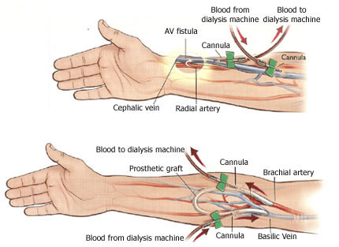

Low-income Patients need more Financial Help for Atrophic Kidney Disease
What are Kidneys ?
The kidneys are two bean-shaped organs in the renal/urinary system.
They help the body pass waste as urine.
They also help filter blood before sending it back to the heart.
Location
Kidneys are located near the middle of your back, just below the rib cage
Functions
maintaining overall fluid balance
regulating and filtering minerals from the blood
filtering waste materials from food, medications, and toxic substances
creating hormones that help produce red blood cells, promote bone health, and regulate blood pressure
What is an Atrophic Kidney?
It is a kidney disorder where the kidneys are relatively small in comparison to the gender, age and body weight of the patient.
also known as renal atrophy.
Symptoms
In the early stages of kidney disease, you might not realize anything wrong.
It can take as much as a 30 to 40 percent loss of function for symptoms to appear.
As the kidneys become less able to filter the blood, you may notice:
changes in the frequency of urination
darkening skin
drowsiness
itchiness
loss of appetite
muscle cramps
nausea and vomiting
swelling of the hands and feet
What causes it?
Kidney damages can suddenly start when the kidney is severely injured or exposed to toxins.
Kidney damage generally occurs over a long period. This can happen because there’s insufficient blood flow to the kidneys.
You may be at higher risk of kidney disease if you have:
diabetes
a family history of kidney disease
heart disease
high blood pressure
Treatment
Much of the treatment will depend on the cause of the atrophy. Treating the specific condition may help prevent further damage to your kidney.
One way to do this is by receiving a healthy kidney from a living or a deceased donor but the wait for a suitable kidney can take years.
Another way is by A KIDNEY TRANSPLANT
How much a kidney transplant costs?
A kidney transplant costs about 260,000 or more,
for a patient who is not covered by health insurance, which many low-income families cannot afford.
Low-income families are generally eligible for coverage through Medicaid and the Children's Health Insurance Program (CHIP).
(if they meet their state's income and residency rules)
Medicaid helps pull families out of poverty by providing access to affordable health coverage and lowering out-of-pocket costs.
But, even with this help, low-income patients will not be able to afford a kidney transplant.
So, the other choice we have is, to have a dialysis.
What is a dialysis?
Dialysis is a treatment that filters and purifies the blood using a machine.
This helps keep your fluids and electrolytes in balance when the kidneys can not do their job.

Why are dialysis used?
When your kidneys can’t perform their functions due to disease or injury,
dialysis can help keep the body running as normally as possible.
To Properly function kidneys to prevent extra water, waste, and other impurities from accumulating in your body.
It also helps control blood pressure and regulate the levels of chemical elements in the blood. (For example: These elements may include sodium and potassium.)
So, without dialysis, salts and other waste products will accumulate in the blood, poison the body, and damage other organs.
However, dialysis isn’t a cure for kidney disease or other problems affecting the kidneys.
Different treatments may be needed to address those concerns.
Therefore, the client will need to have dialysis several times a week for the rest of their life.
and many low-income patients stay in treatment for about 3 years or more because they cannot afford a kidney transplant or they may not even afford a dialysis
(if they do not meet requirements for CHIP or Medicaid).
Overall, many low-income families may need more financial help, in order to have a better health care,
which I believe that everyone deserves one.